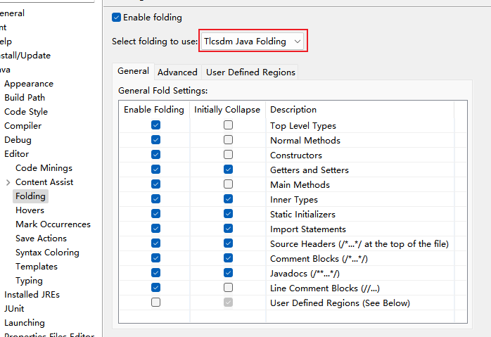

Introduction
Welcome to the documentation for the Eclipse Folding plugin.
This plugin enhances code folding in Eclipse IDE, based on and maintained from Coffee-Bytes Code Folding.
It allows defining custom foldable regions in Java, XML, and other files using //[start] … //[end] comments, making code more organized and easier to navigate.
Features
- Folding support for classes, methods, field groups, imports, comments, and documentation.
- Custom Region Folding: Define your own folding markers (default [start] / [end]).
- Deep integration with Eclipse JDT folding preferences to enable/disable folding for specific elements.
- Fold/Unfold All and hierarchical folding/unfolding commands.
- Customizable folding strategies in Preferences: Configure in Window → Preferences → Java → Editor → Folding.
- Preserves Native Folding: Extends Eclipse’s folding system without removing built-in features.
Usage
Folding/Unfolding in Java Editor
- Use the folding markers (triangles) in the editor margin.
- Use the Source menu or shortcuts for batch operations.
Selecting Folding Provider
- Go to Window ▸ Preferences ▸ Java ▸ Editor ▸ Folding.
- Select the Tlcsdm Java Folding provider.
- Enable initial folding for specific elements as needed.

Support/Bugs/Feature Requests
If you have some thoughts about OpenExplorer, be it a bug report a feature request
or whatever, use issues section
of the project's GitHub page. If the plug-in does not work properly in your
environment or if you have an idea for a nice feature that would be suitable
for this plug-in, just go ahead and tell me.